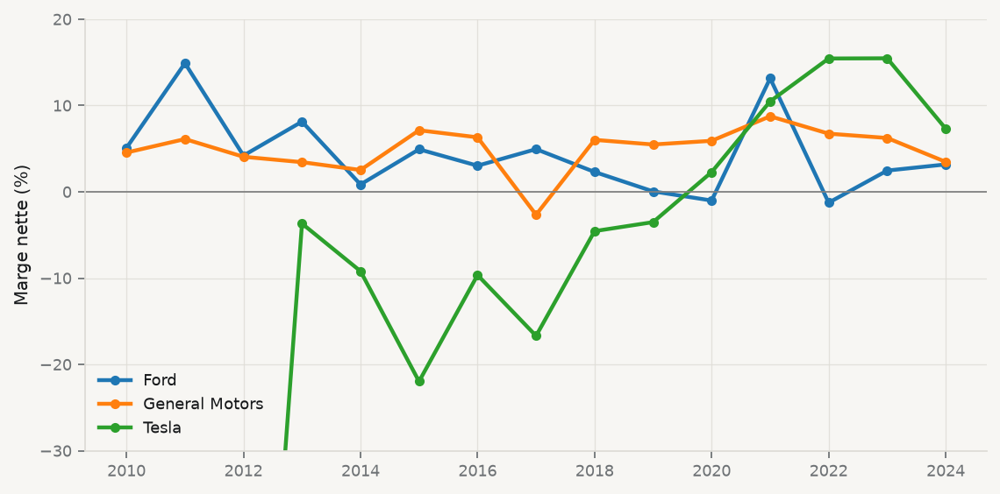

chiffre_affaires = 96_773 # Tesla, 2023, millions de $ US
resultat_net = 14_974
marge_nette = resultat_net / chiffre_affaires
print(f"Marge nette de Tesla en 2023 : {marge_nette:.1%}")Marge nette de Tesla en 2023 : 15.5%« Tesla est vraiment bonne pour l’environnement. » La phrase circule, elle est plausible, et elle ne peut être ni confirmée ni infirmée telle quelle. Pour qu’une donnée puisse lui répondre, il faut d’abord préciser trois choses.
Par rapport à quoi ? Un véhicule électrique se compare à un véhicule thermique de même catégorie, à la moyenne du parc, au transport en commun — et la réponse change selon le comparateur. Selon quelle mesure ? Les émissions à l’usage, à la fabrication (la batterie pèse lourd) ou sur l’ensemble du cycle de vie ne racontent pas la même histoire. Pour qui, et où ? Une voiture électrique rechargée au Québec, où l’électricité est presque entièrement hydraulique, n’a pas le même bilan qu’en Pologne, où le charbon domine encore.
Ce travail de réécriture est la première compétence du cours. Il ne demande aucun code. Mais dès qu’une question est précise, il faut des données, et un outil pour les lire. Ce chapitre installe cet outil.
Travailler avec des données en Python mobilise quatre éléments qu’il est utile de distinguer, parce que la plupart des problèmes d’installation viennent de leur confusion.
| Pièce | Ce que c’est |
|---|---|
| Python | Le langage, et l’interpréteur qui exécute le code |
| Les paquets | Du code écrit par d’autres (pandas, matplotlib…), que l’on importe |
| L’environnement virtuel | Une installation de Python propre à un projet, avec ses paquets et leurs versions |
| L’éditeur (VS Code) | Le logiciel où l’on écrit et exécute le code |
L’environnement virtuel est la pièce la moins intuitive. Sans lui, tous les projets d’un ordinateur partagent les mêmes paquets ; le jour où deux projets exigent des versions incompatibles, l’un des deux cesse de fonctionner. Avec lui, chaque projet a son dossier .venv, et la liste de ses paquets tient dans un fichier, requirements.txt, que n’importe qui peut réinstaller à l’identique :
python3 -m venv .venv # Windows : py -m venv .venv
source .venv/bin/activate # Windows : .venv\Scripts\activate
python -m pip install -r requirements.txtLe piège des certificats sous macOS. L’installateur de python.org n’installe pas les certificats racines utilisés par le module ssl. Tant que le script Install Certificates.command (dans Applications/Python 3.x) n’a pas été exécuté, une instruction comme pd.read_csv("https://…") échoue avec CERTIFICATE_VERIFY_FAILED, alors même que le navigateur accède sans difficulté à la même adresse. Le script verifier_environnement.py de la séance 1 teste précisément ce cas.
Python se lit presque comme de l’anglais. Le signe = range une valeur dans un nom :
chiffre_affaires = 96_773 # Tesla, 2023, millions de $ US
resultat_net = 14_974
marge_nette = resultat_net / chiffre_affaires
print(f"Marge nette de Tesla en 2023 : {marge_nette:.1%}")Marge nette de Tesla en 2023 : 15.5%Chaque valeur a un type. Les plus courants sont l’entier (int), le nombre à virgule (float), le texte (str) et le booléen (bool). La confusion entre un nombre et du texte qui ressemble à un nombre est l’erreur la plus fréquente lors de l’importation de données :
print(2023 + 1, "2023" + "1")2024 20231Deux structures suffisent pour commencer. La liste range des valeurs dans un ordre ; le dictionnaire associe des clés à des valeurs :
constructeurs = ["Tesla", "Ford", "General Motors"]
ventes_2023 = {"Tesla": 96_773, "Ford": 176_191, "General Motors": 157_658}
for nom in constructeurs:
print(f"{nom:15s} {ventes_2023[nom]:>9,} M$")Tesla 96,773 M$
Ford 176,191 M$
General Motors 157,658 M$Enfin, une fonction donne un nom à un calcul que l’on répétera. Si la définition change, on la corrige à un seul endroit :
def marge(resultat, ventes):
"""Part de chaque dollar de ventes qui reste en profit."""
return resultat / ventes
print(f"Ford : {marge(4_347, 176_191):.1%}")Ford : 2.5%Un dictionnaire de listes a déjà la forme d’un tableau : chaque clé est une colonne. Le paquet pandas (McKinney 2010) transforme cette structure en DataFrame, l’objet central de tout le cours :
df = pd.DataFrame({
"entreprise": ["Tesla", "Ford", "General Motors"],
"ventes": [96_773, 176_191, 157_658],
"resultat": [14_974, 4_347, 9_840],
})
df["marge"] = df["resultat"] / df["ventes"]
df| entreprise | ventes | resultat | marge | |
|---|---|---|---|---|
| 0 | Tesla | 96773 | 14974 | 0.154733 |
| 1 | Ford | 176191 | 4347 | 0.024672 |
| 2 | General Motors | 157658 | 9840 | 0.062414 |
Une opération écrite sur une colonne s’applique à toutes les lignes à la fois : c’est ce qui rend pandas rapide à écrire et rapide à exécuter.
Les données du cours sont plus riches. Le fichier data/entreprises.csv réunit 32 grandes entreprises cotées aux États-Unis, de 2010 à 2024, à partir des états financiers qu’elles déposent auprès de la SEC :
entreprises = pd.read_csv("data/entreprises.csv")
print(entreprises.shape)
entreprises.head()(480, 12)| ticker | entreprise | cik | secteur | pays_siege | annee | chiffre_affaires | resultat_net | actifs_totaux | capitaux_propres | rd | investissements | |
|---|---|---|---|---|---|---|---|---|---|---|---|---|
| 0 | TSLA | Tesla | 1318605 | Automobile | USA | 2010 | 116.7 | -154.3 | 386.1 | 207.0 | 93.0 | 40.2 |
| 1 | TSLA | Tesla | 1318605 | Automobile | USA | 2011 | 204.2 | -254.4 | 713.4 | 224.0 | 209.0 | 184.2 |
| 2 | TSLA | Tesla | 1318605 | Automobile | USA | 2012 | 413.3 | -396.2 | 1114.2 | 124.7 | 274.0 | 239.2 |
| 3 | TSLA | Tesla | 1318605 | Automobile | USA | 2013 | 2013.5 | -74.0 | 2416.9 | 667.1 | 232.0 | 264.2 |
| 4 | TSLA | Tesla | 1318605 | Automobile | USA | 2014 | 3198.4 | -294.0 | 5830.7 | 911.7 | 464.7 | 969.9 |
entreprises.isna().mean().round(2).sort_values(ascending=False).head(4)rd 0.28
investissements 0.25
resultat_net 0.02
chiffre_affaires 0.01
dtype: float64La dépense de R-D manque pour plus d’un quart des lignes. Ce n’est pas un défaut de téléchargement : Walmart, Costco ou McDonald’s ne publient pas de poste « recherche et développement », et Amazon range la sienne sous un autre intitulé. Une valeur manquante est souvent une information sur l’entreprise ; la remplacer par zéro serait une erreur.
Quel constructeur automobile était le plus rentable en 2023 ?
auto = entreprises[entreprises["secteur"] == "Automobile"].copy()
auto["marge"] = auto["resultat_net"] / auto["chiffre_affaires"]
(auto[auto["annee"] == 2023]
[["entreprise", "chiffre_affaires", "resultat_net", "marge"]]
.sort_values("marge", ascending=False))| entreprise | chiffre_affaires | resultat_net | marge | |
|---|---|---|---|---|
| 13 | Tesla | 96773.0 | 14974.0 | 0.154733 |
| 43 | General Motors | 157658.0 | 9840.0 | 0.062414 |
| 28 | Ford | 176191.0 | 4347.0 | 0.024672 |
Et depuis quand ?
from plotstyle import setup
plt = setup()
fig, ax = plt.subplots()
for nom, groupe in auto.groupby("entreprise"):
ax.plot(groupe["annee"], groupe["marge"] * 100, marker="o", label=nom)
ax.axhline(0, color="grey", linewidth=0.8)
ax.set_ylim(-30, 20)
ax.set_ylabel("Marge nette (%)")
ax.legend(frameon=False)
plt.show()
Tesla perd de l’argent chaque année jusqu’en 2019 — en 2010, ses pertes représentent 132% de ses ventes, hors du cadre de la figure Figure 1.1. Elle devient rentable en 2020 et dépasse Ford et GM à partir de 2022.
Ces chiffres répondent à une question de rentabilité. Ils ne disent rien de l’impact environnemental de Tesla : il faudrait pour cela des données d’émissions, de mix électrique et de ventes par motorisation, qui ne figurent pas dans des états financiers. Les importer est l’objet du chapitre 3. Le réflexe à acquérir dès maintenant est de toujours écrire, à côté d’un résultat, la question à laquelle il répond — et celle à laquelle il ne répond pas.
Un assistant d’IA générative est utile à trois moments : pour expliquer un message d’erreur, pour commenter un bloc de code ligne par ligne, et pour vous interroger sur un concept. Il est dangereux à un quatrième : lorsqu’il produit un résultat que vous ne savez pas vérifier. Les modèles écrivent souvent du code destiné à d’anciennes versions des paquets — DataFrame.append, par exemple, n’existe plus depuis pandas 2.0. Exécuter, lire l’erreur, corriger : la boucle est la même que pour votre propre code.
À retenir. Une question précise avant les données ; un environnement virtuel par projet ; un script qui s’exécute de haut en bas ; et, à côté de chaque résultat, ce qu’il ne permet pas de conclure.